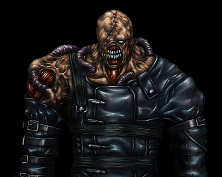
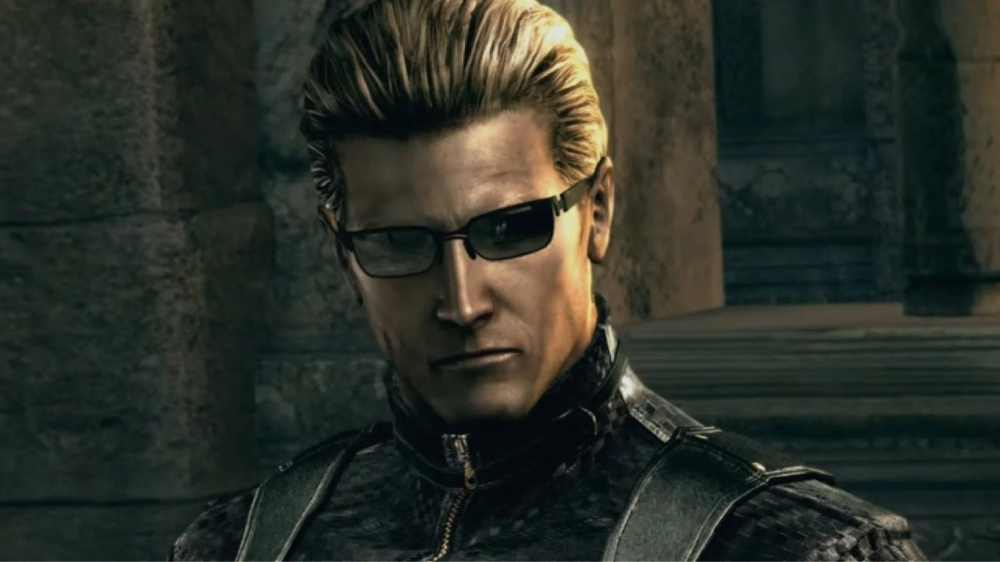

Resident Evil es una franquicia de videojuegos de terror y supervivencia creada por Capcom. La serie sigue los eventos de un grupo de individuos que luchan contra armas biológicas creadas por la siniestra Corporación Umbrella. Desde su primer lanzamiento en 1996, Resident Evil ha evolucionado y se ha diversificado en numerosos videojuegos, películas, cómics y novelas, convirtiéndose en una de las series más influyentes en el género del horror.
Esta gigantesca figura enmascarada desplegada en una cápsula reforzada es la nueva arma biológica de Umbrella. Su diseño está basado en el formidable Tyrant, perfeccionando los pocos fallos de su predecesor. Hay dos mejoras en particular que deben ser destacadas: su autonomía, que le permite decidir por sí mismo para lograr su objetivo, y su capacidad de regeneración, la cual le permite dominar el campo de batalla sin importar las heridas que sufra. La misión de Némesis es muy simple: exterminar a los miembros de S.T.A.R.S. que queden en Raccoon City. Sus averiguaciones sobre Umbrella son demasiado peligrosas, y deben ser eliminados. Némesis ha empezado a rastrear a sus presas y ya tiene su primer objetivo: Jill Valentine.
Albert Wesker conocido por su gran participación en la saga Resident Evil como uno de los villanos principales. Fue uno de los primeros personajes en aparecer en la franquicia junto con Chris Redfield, Jill Valentine, Barry Burton y los demás miembros de S.T.A.R.S. Aún así, su historia es más remota a los acontecimientos del 23 y 24 de julio de 1998.
